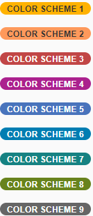
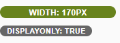
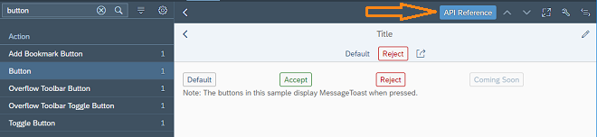

What's New in SAPUI5 1.54
What's New in SAPUI5 1.54
sap.m.ColorPalette: Provides the user with a palette containing up to 15 predefined web-standard colors, such as, Gold, Dark Magenta, and White. You can enable a Default Color button with a specified default color visible for the user. If the predefined set of colors is not sufficient, you can enable a More Colors button that openssap.ui.unified.ColorPicker. For more information, see the API Reference and the Samples.
sap.m.TimePickerSliders: Enables the user to choose time, in different formats, from the available lists in the sliders. The control can be used inside any container. For more information, see the API Reference and the Samples.
-
sap.suite.ui.commons.MicroProcessFlow: Enables you to embed process flow indicators into other controls, such as headers, lists, and tables. This control acts as a generic container with process flow nodes laid out linearly along the horizontal axis. By default, the process flow nodes appear as circular icons that use semantic colors and provide click events. The default nodes can be replaced by other SAPUI5 controls, such as micro charts, status indicators, buttons, and labels.For more information, see Micro Process Flow, the API Reference and the Samples.
-
sap.tnt.InfoLabel: Small non-interactive control whose purpose is to attract attention to a certain piece of information such as a state, quantity, condition. The control is vertically aligned with the SAPUI5InputandButtoncontrol families.InfoLabelhas arenderModeproperty with the valueslooseandnarrowthat specify the side paddings. By default, the padding is loose, but for numeric text values, use narrow paddings.

The background and text color combinations are predefined. You can choose from 9 color schemes where the text content and choice of color depend on your preferences. The
colorSchemeproperty also accepts a digit as a value.The size of the
InfoLabelcontrol adjusts to fit other controls, such as non-editable forms or tables, when thedisplayOnlyproperty is set totrue.For more information, see the API Reference and the Samples.
-
sap.ui.comp.smartmultiedit: Enables the users to perform mass changes on multiple homogeneous objects. When you pass a set of such objects to theSmartMultiEditcontrol, it provides a customizable list of object attributes. Each attribute value can be changed, cleared, or kept as it is. The control provides value helpers, formatting, and validation, based on the data types of individual object attributes. For more information, see Smart Multi Edit, the API Reference and the Samples.
Initialization Module for Bootstrap
You can now specify an initialization module that is loaded and executed after
the initialization of the core with the configuration parameter
onInit like
this:.
<script src="/sapui5/resources/sap-ui-core.js"
id="sap-ui-bootstrap"
data-sap-ui-libs="sap.m"
data-sap-ui-oninit="module:sap/app/App"
data-sap-ui-resourceroots='{"sap.app": "my/local/path"}'
data-sap-ui-theme="sap_belize"></script>
manifest Property for Component
Containers
You can now also use the "Manifest First" mechanism for component containers. For more information, see Using and Nesting Components.
SAPUI5 OData V4 Model
The new version of the SAPUI5 OData V4 model has the following features:
-
Enhancements to the adapter to use the V4 model with an OData V2 service:
-
Handling of complex filters with
and,or,not, brackets, and frequently used functions includingcontains. -
Support for bound operations by evaluating the V2 annotation
sap:action-for. -
Additional annotation conversions and warnings (in the console) for V2 annotations that are not converted.
-
-
Suspend and resume absolute context and list bindings. A suspended binding will not send requests to the backend.
-
Possibility to refresh a single row in an absolute list binding.
-
Support of bound functions.
-
Newly created entities in an absolute list binding are refreshed/reread automatically after the successful post to the server.
-
It is now possible to request the
x-csrftoken and the root metadata document earlier. This is controlled by model parameter earlyRequests.The default value of earlyRequests is false and this default may change in the future.
-
Action advertisements can be accessed in bindings by specifying
#<namespace>.<action>The previous method for metadata access is still available, but we recommend using a double hash (##) syntax instead.
Due to the limited feature scope of this version of the SAPUI5 OData V4
model, check that all required features are in place before developing
applications. Check the detailed documentation of the features, as certain
parts of a feature may be missing. While we aim to be compatible with
existing controls, some controls might not work due to small
incompatibilities compared to
sap.ui.model.odata.(v2.)ODataModel, or due to missing
features in the model (such as tree binding). This also applies to smart controls (sap.ui.comp library) and SAP Fiori elements
that do not support the SAPUI5
OData V4 model, as well as controls such as
TreeTable and AnalyticalTable, which
are not supported together with the SAPUI5 OData V4
model. The interface for applications has been changed for easier and more
efficient use of the model. For a summary of these changes, see Changes Compared to OData V2 Model.
For more information, see OData V4 Model, the API Reference, and the Sample in the Demo Kit.
Default Font
A new default font, the 72 font family that offers some legibility and accessibility enhancements, has been implemented.
Make sure the settings in your application are correct and comply with the new font, for example, texts are placed correctly and fonts are used consistently.
Spreadsheet Export
A new worksheet is available for exported spreadsheets in the
sap.ui.export library that provides additional context
information, such as administrative
information
like the server. For more
information, see the API Reference for
metaSheetName and the Sample.
Support Assistant Performance and Usability Improvements
There are several improvements in the Support Assistant tool:
-
Better initial loading performance - now each library should have a
.supportrcfile in its root folder. The purpose of this file is to serve as a metadata container to be used by the Support Assistant ruleset loader module.For more information, see Create a Ruleset for a Library.
-
Improved perceived UI performance during initial tool loading – achieved by early and dynamic rendering of the most important UI elements and introducing a progress bar in the main screen of the Support Assistant.
-
Improved usability:
-
The selection of rules to run an analysis has been improved. Now, selecting a library selects all the rules it contains.
-
The Issues and Rules buttons are now highlighted to show the user which view is active at the moment.
-
The issue details in the Issues view have been moved from the top to the bottom of the window for better usability.
-

UI5 Inspector Updated
A new minor version 0.9.4 of the UI5 Inspector is available in the Chrome Web Store with some code adjustments and the new SAPUI5 logo.
Information about downloading SAPUI5 can now be accessed easily through the new Download button on the home page:
A new API Reference button is now available when a sample page is loaded. It links directly to the control's API information:
In the API Reference, information is now available if an aggregation is used by default:

-
Browser back button functionality is available for the API Reference as the navigation steps are now persisted in the browser history.
-
Performance improvements: We have enabled lazy loading for the methods in the API Reference and implemented other various optimizations. The performance of the app has improved as a result.
Parent topic: Previous Versions